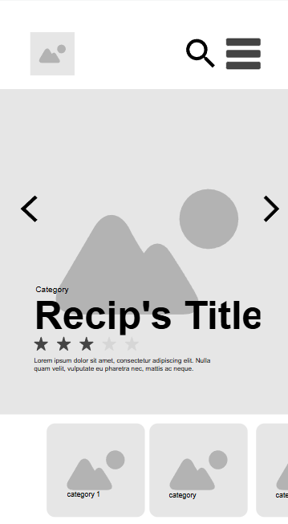
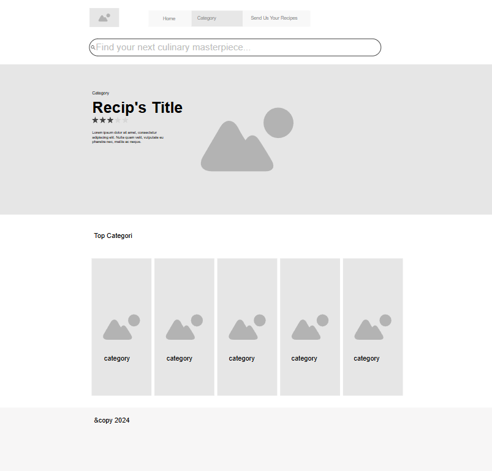

Project Site Plan - Delicious Recipes
Site Name
Site Name: Delicious Recipes
This name was chosen to reflect the variety and taste of the recipes that will be presented on the site.
Optional Domain Availability: deliciousrecipes.com
Site Purpose
The site serves as a repository for recipes, allowing users to find, share, and comment on recipes. The goal is to create a community around cooking.
Scenarios
- What are the best recipes for a quick dinner?
- How can I make an easy and delicious dessert?
Color Schema
Primary Color: #4CAF50 (Green) - Used for headings and buttons.
Secondary Color: #333 (Dark Gray) - Used for main text.
Background Color: #f4f4f4 - Used for the main background.
Typography
Font 1: Montserrat - Used for body text.
Font 2: Georgia - Used for headings and subheadings.
Heading Example (H3)
This is a sample body text using Montserrat.
Another Heading Example (H2)
This text demonstrates the Montserrat font in use.
Wireframe
Mobile View
The layout emphasizes a clean, user-friendly interface, making it easy for visitors to navigate and find recipes.
Desktop View
The layout emphasizes a clean, user-friendly interface, making it easy for visitors to navigate and find recipes.
